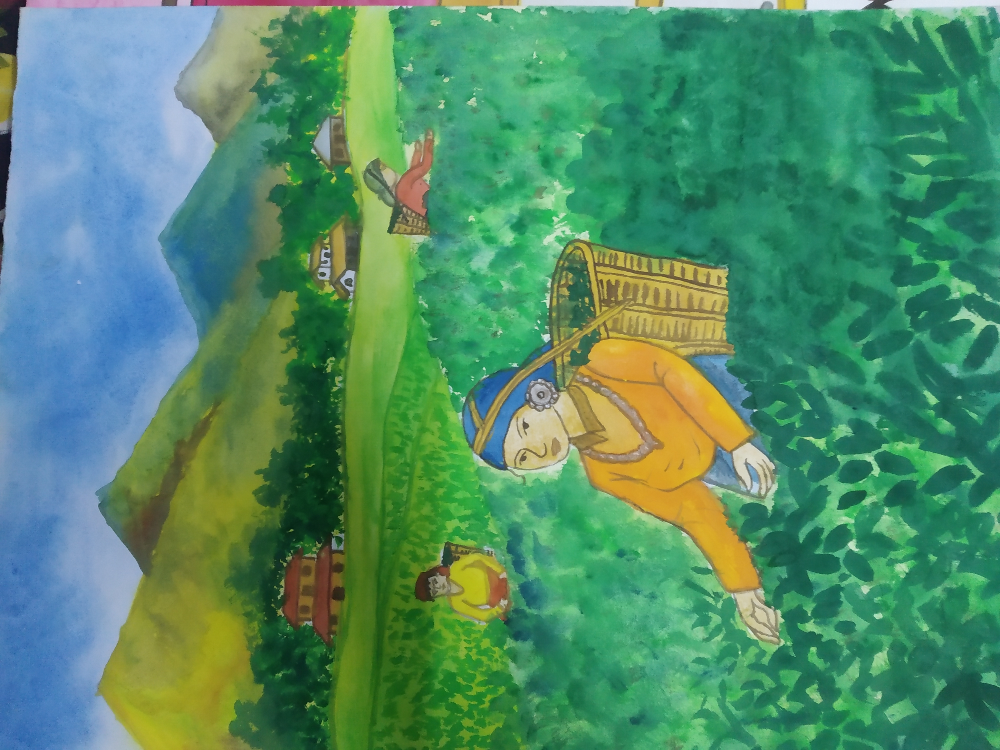
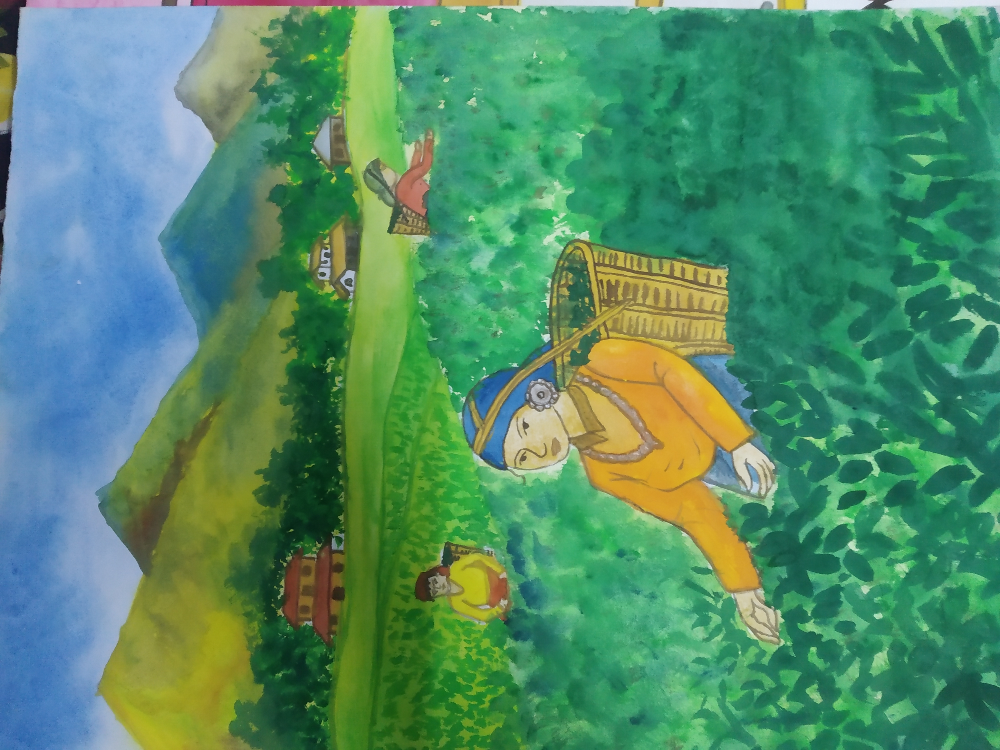

.jpg)

 

.jpg)


.jpg)
.jpg)
.jpg)
.jpg)


Drawing is a form of visual art in which an artist uses instruments to mark paper or other two-dimensional surface. Drawing instruments include graphite pencils, pen and ink, various kinds of paints, inked brushes, colored pencils, crayons, charcoal, chalk, pastels, erasers, markers, styluses, and metals (such as silverpoint). Digital drawing is the act of using a computer to draw. Common methods of digital drawing include a stylus or finger on a touchscreen device, stylus- or finger-to-touchpad, or in some cases, a mouse. There are many digital art programs and devices.
A drawing instrument releases a small amount of material onto a surface, leaving a visible mark. The most common support for drawing is paper, although other materials, such as cardboard, wood, plastic, leather, canvas, and board, have been used. Temporary drawings may be made on a blackboard or whiteboard. Drawing has been a popular and fundamental means of public expression throughout human history. It is one of the simplest and most efficient means of communicating ideas.[1] The wide availability of drawing instruments makes drawing one of the most common artistic activities.
In addition to its more artistic forms, drawing is frequently used in commercial illustration, animation, architecture, engineering, and technical drawing. A quick, freehand drawing, usually not intended as a finished work, is sometimes called a sketch. An artist who practices or works in technical drawing may be called a drafter, draftsman, or draughtsman
Drawing is one of the oldest forms of human expression, with evidence for its existence preceding that of written communication.[5] It is believed that drawing was used as a specialised form of communication before the invention of the written language,[5][6] demonstrated by the production of cave and rock paintings around 30,000 years ago (Art of the Upper Paleolithic).[7] These drawings, known as pictograms, depicted objects and abstract concepts.[8] The sketches and paintings produced by Neolithic times were eventually stylised and simplified in to symbol systems (proto-writing) and eventually into early writing systems.
Before the widespread availability of paper, 12th-century monks in European monasteries used intricate drawings to prepare illustrated, illuminated manuscripts on vellum and parchment. Drawing has also been used extensively in the field of science, as a method of discovery, understanding and explanation.
Drawing diagrams of observations is an important part of scientific study. In 1609, astronomer Galileo Galilei explained the changing phases of Venus and also the sunspots through his observational telescopic drawings.[9] In 1924, geophysicist Alfred Wegener used illustrations to visually demonstrate the origin of the continents.
Drawing is used to express one's creativity, and therefore has been prominent in the world of art. Throughout much of history, drawing was regarded as the foundation for artistic practice.[10] Initially, artists used and reused wooden tablets for the production of their drawings.[11] Following the widespread availability of paper in the 14th century, the use of drawing in the arts increased. At this point, drawing was commonly used as a tool for thought and investigation, acting as a study medium whilst artists were preparing for their final pieces of work.[12][13] The Renaissance brought about a great sophistication in drawing techniques, enabling artists to represent things more realistically than before,[14] and revealing an interest in geometry and philosophy.[15] The invention of the first widely available form of photography led to a shift in the hierarchy of the arts.[16] Photography offered an alternative to drawing as a method for accurately representing visual phenomena, and traditional drawing practice was given less emphasis as an essential skill for artists, particularly so in Western society.[
Drawing became significant as an art form around the late 15th century, with artists and master engravers such as Albrecht Dürer and Martin Schongauer (c. 1448-1491), the first Northern engraver known by name. Schongauer came from Alsace, and was born into a family of goldsmiths. Albrecht Dürer, a master of the next generation, was also the son of a goldsmith.[17][18] Old Master Drawings often reflect the history of the country in which they were produced, and the fundamental characteristics of a nation at that time. In 17th-century Holland, a Protestant country, there were almost no religious artworks, and, with no King or court, most art was bought privately. Drawings of landscapes or genre scenes were often viewed not as sketches but as highly finished works of art. Italian drawings, however, show the influence of Catholicism and the Church, which played a major role in artistic patronage. The same is often true of French drawings, although in the 17th century the disciplines of French Classicism[19] meant drawings were less Baroque than the more free Italian counterparts, which conveyed a greater sense of movement.[20] In the 20th century Modernism encouraged "imaginative originality"[21] and some artists' approach to drawing became less literal, more abstract. World-renowned artists such as Pablo Picasso, Andy Warhol and Jean-Michel Basquiat helped challenge the status quo, with drawing being very much at the centre of their practice, and often re-interpreting traditional technique.[22] Basquiat's drawings were produced in many different mediums, most commonly ink, pencil, felt-tip or marker, and oil-stick, and he drew on any surface that came to hand, such as doors, clothing, refrigerators, walls and baseball helmets.
The medium is the means by which ink, pigment or color are delivered onto the drawing surface. Most drawing media are either dry (e.g. graphite, charcoal, pastels, Conté, silverpoint), or use a fluid solvent or carrier (marker, pen and ink). Watercolor pencils can be used dry like ordinary pencils, then moistened with a wet brush to get various painterly effects. Very rarely, artists have drawn with (usually decoded) invisible ink. Metalpoint drawing usually employs either of two metals: silver or lead.[25] More rarely used are gold, platinum, copper, brass, bronze, and tinpoint. Paper comes in a variety of different sizes and qualities, ranging from newspaper grade up to high quality and relatively expensive paper sold as individual sheets.[26] Papers vary in texture, hue, acidity, and strength when wet. Smooth paper is good for rendering fine detail, but a more "toothy" paper holds the drawing material better. Thus a coarser material is useful for producing deeper contrast. Newsprint and typing paper may be useful for practice and rough sketches. Tracing paper is used to experiment over a half-finished drawing, and to transfer a design from one sheet to another. Cartridge paper is the basic type of drawing paper sold in pads. Bristol board and even heavier acid-free boards, frequently with smooth finishes, are used for drawing fine detail and do not distort when wet media (ink, washes) are applied. Vellum is extremely smooth and suitable for very fine detail. Coldpressed watercolor paper may be favored for ink drawing due to its texture. Acid-free, archival quality paper keeps its color and texture far longer than wood pulp based paper such as newsprint, which turns yellow and becomes brittle much sooner. The basic tools are a drawing board or table, pencil sharpener and eraser, and for ink drawing, blotting paper. Other tools used are circle compass, ruler, and set square. Fixative is used to prevent pencil and crayon marks from smudging. Drafting tape is used to secure paper to drawing surface, and also to mask an area to keep it free of accidental marks, such as sprayed or spattered materials and washes. An easel or slanted table is used to keep the drawing surface in a suitable position, which is generally more horizontal than the position used in painting.
Almost all draftsmen use their hands and fingers to apply the media, with the exception of some handicapped individuals who draw with their mouth or feet.[27]
Prior to working on an image, the artist typically explores how various media work. They may try different drawing implements on practice sheets to determine value and texture, and how to apply the implement to produce various effects.
The artist's choice of drawing strokes affects the appearance of the image. Pen and ink drawings often use hatching – groups of parallel lines.[28] Cross-hatching uses hatching in two or more different directions to create a darker tone. Broken hatching, or lines with intermittent breaks, form lighter tones – and controlling the density of the breaks achieves a gradation of tone. Stippling uses dots to produce tone, texture and shade. Different textures can be achieved depending on the method used to build tone.[29]
Drawings in dry media often use similar techniques, though pencils and drawing sticks can achieve continuous variations in tone. Typically a drawing is filled in based on which hand the artist favors. A right-handed artist draws from left to right to avoid smearing the image. Erasers can remove unwanted lines, lighten tones, and clean up stray marks. In a sketch or outline drawing, lines drawn often follow the contour of the subject, creating depth by looking like shadows cast from a light in the artist's position.
Sometimes the artist leaves a section of the image untouched while filling in the remainder. The shape of the area to preserve can be painted with masking fluid or cut out of a frisket and applied to the drawing surface, protecting the surface from stray marks until the mask is removed.
Another method to preserve a section of the image is to apply a spray-on fixative to the surface. This holds loose material more firmly to the sheet and prevents it from smearing. However the fixative spray typically uses chemicals that can harm the respiratory system, so it should be employed in a well-ventilated area such as outdoors.
Another technique is subtractive drawing in which the drawing surface is covered with graphite or charcoal and then erased to make the image.
Shading is the technique of varying the tonal values on the paper to represent the shade of the material as well as the placement of the shadows. Careful attention to reflected light, shadows and highlights can result in a very realistic rendition of the image.
Blending uses an implement to soften or spread the original drawing strokes. Blending is most easily done with a medium that does not immediately fix itself, such as graphite, chalk, or charcoal, although freshly applied ink can be smudged, wet or dry, for some effects. For shading and blending, the artist can use a blending stump, tissue, a kneaded eraser, a fingertip, or any combination of them. A piece of chamois is useful for creating smooth textures, and for removing material to lighten the tone. Continuous tone can be achieved with graphite on a smooth surface without blending, but the technique is laborious, involving small circular or oval strokes with a somewhat blunt point.
Shading techniques that also introduce texture to the drawing include hatching and stippling. A number of other methods produce texture. In addition to the choice of paper, drawing material and technique affect texture. Texture can be made to appear more realistic when it is drawn next to a contrasting texture; a coarse texture is more obvious when placed next to a smoothly blended area. A similar effect can be achieved by drawing different tones close together. A light edge next to a dark background stands out to the eye, and almost appears to float above the surface.
Measuring the dimensions of a subject while blocking in the drawing is an important step in producing a realistic rendition of the subject. Tools such as a compass can be used to measure the angles of different sides. These angles can be reproduced on the drawing surface and then rechecked to make sure they are accurate. Another form of measurement is to compare the relative sizes of different parts of the subject with each other. A finger placed at a point along the drawing implement can be used to compare that dimension with other parts of the image. A ruler can be used both as a straightedge and a device to compute proportions.
Variation of proportion with age
When attempting to draw a complicated shape such as a human figure, it is helpful at first to represent the form with a set of primitive volumes. Almost any form can be represented by some combination of the cube, sphere, cylinder, and cone. Once these basic volumes have been assembled into a likeness, then the drawing can be refined into a more accurate and polished form. The lines of the primitive volumes are removed and replaced by the final likeness. Drawing the underlying construction is a fundamental skill for representational art, and is taught in many books and schools. Its correct application resolves most uncertainties about smaller details, and makes the final image look consistent.[31]
A more refined art of figure drawing relies upon the artist possessing a deep understanding of anatomy and the human proportions. A trained artist is familiar with the skeleton structure, joint location, muscle placement, tendon movement, and how the different parts work together during movement. This allows the artist to render more natural poses that do not appear artificially stiff. The artist is also familiar with how the proportions vary depending on the age of the subject, particularly when drawing a portrait.
Linear perspective is a method of portraying objects on a flat surface so that the dimensions shrink with distance. Each set of parallel, straight edges of any object, whether a building or a table, follows lines that eventually converge at a vanishing point. Typically this convergence point is somewhere along the horizon, as buildings are built level with the flat surface. When multiple structures are aligned with each other, such as buildings along a street, the horizontal tops and bottoms of the structures typically converge at a vanishing point.
When both the fronts and sides of a building are drawn, then the parallel lines forming a side converge at a second point along the horizon (which may be off the drawing paper.) This is a two-point perspective.[32] Converging the vertical lines to a third point above or below the horizon then produces a three-point perspective.
Depth can also be portrayed by several techniques in addition to the perspective approach above. Objects of similar size should appear ever smaller the further they are from the viewer. Thus the back wheel of a cart appears slightly smaller than the front wheel. Depth can be portrayed through the use of texture. As the texture of an object gets further away it becomes more compressed and busy, taking on an entirely different character than if it was close. Depth can also be portrayed by reducing the contrast in more distant objects, and by making their colors less saturated. This reproduces the effect of atmospheric haze, and cause the eye to focus primarily on objects drawn in the foreground.
The composition of the image is an important element in producing an interesting work of artistic merit. The artist plans element placement in the art to communicate ideas and feelings with the viewer. The composition can determine the focus of the art, and result in a harmonious whole that is aesthetically appealing and stimulating.
The illumination of the subject is also a key element in creating an artistic piece, and the interplay of light and shadow is a valuable method in the artist's toolbox. The placement of the light sources can make a considerable difference in the type of message that is being presented. Multiple light sources can wash out any wrinkles in a person's face, for instance, and give a more youthful appearance. In contrast, a single light source, such as harsh daylight, can serve to highlight any texture or interesting features.
When drawing an object or figure, the skilled artist pays attention to both the area within the silhouette and what lies outside. The exterior is termed the negative space, and can be as important in the representation as the figure. Objects placed in the background of the figure should appear properly placed wherever they can be viewed.
A study is a draft drawing that is made in preparation for a planned final image. Studies can be used to determine the appearances of specific parts of the completed image, or for experimenting with the best approach for accomplishing the end goal. However a well-crafted study can be a piece of art in its own right, and many hours of careful work can go into completing a study.
Individuals display differences in their ability to produce visually accurate drawings.[33] A visually accurate drawing is described as being "recognized as a particular object at a particular time and in a particular space, rendered with little addition of visual detail that can not be seen in the object represented or with little deletion of visual detail”.[34]
Investigative studies have aimed to explain the reasons why some individuals draw better than others. One study posited four key abilities in the drawing process: motor skills required for mark-making, the drawer's own perception of their drawing, perception of objects being drawn, and the ability to make good representational decisions.[34] Following this hypothesis, several studies have sought to conclude which of these processes are most significant in affecting the accuracy of drawings.
Motor control is an important physical component in the 'Production Phase' of the drawing process.[35] It has been suggested that motor control plays a role in drawing ability, though its effects are not significant
It has been suggested that an individual's ability to perceive an object they are drawing is the most important stage in the drawing process.[34] This suggestion is supported by the discovery of a robust relationship between perception and drawing ability.[36]
This evidence acted as the basis of Betty Edwards' how-to-draw book, Drawing on the Right Side of the Brain.[37] Edwards aimed to teach her readers how to draw, based on the development of the reader's perceptual abilities.
Furthermore, the influential artist and art critic John Ruskin emphasised the importance of perception in the drawing process in his book The Elements of Drawing.[38] He stated that "For I am nearly convinced, that once we see keenly enough, there is very little difficult in drawing what we see".
This has also been shown to influence one's ability to create visually accurate drawings. Short-term memory plays an important part in drawing as one's gaze shifts between the object they are drawing and the drawing itself.
Some studies comparing artists to non-artists have found that artists spend more time thinking strategically while drawing. In particular, artists spend more time on 'metacognitive' activities such as considering different hypothetical plans for how they might progress with a drawing.
'Drawing makes invention more accessible for me. Faster. Immediate. I start a drawing and I start to invent. I am always destroying the drawing’s status quo. I guess you could say I practice my own form of larceny. I sabotage reality, otherwise its like kissing without using your tongue. I can’t even cook a hamburger without messing with it… Before, often I lay down everything in a realistic way, but now, I have less patience for realism, my heart is too full. I need to release more emotion. I want more emotion and that gets in the way of realism. I want to cut the realism. Now, I’m letting off a lot of firecrackers, and I’m putting down a lot of ideas as though I was building with ideas. Things are coming up. Things are coming up and I have no way to speak about what the things are, but things are coming up that wouldn’t ordinarily grow next to each other. The depiction of physical energy on the paper and the disturbing of the paper’s surface are other ways to bring the drawing to life.'